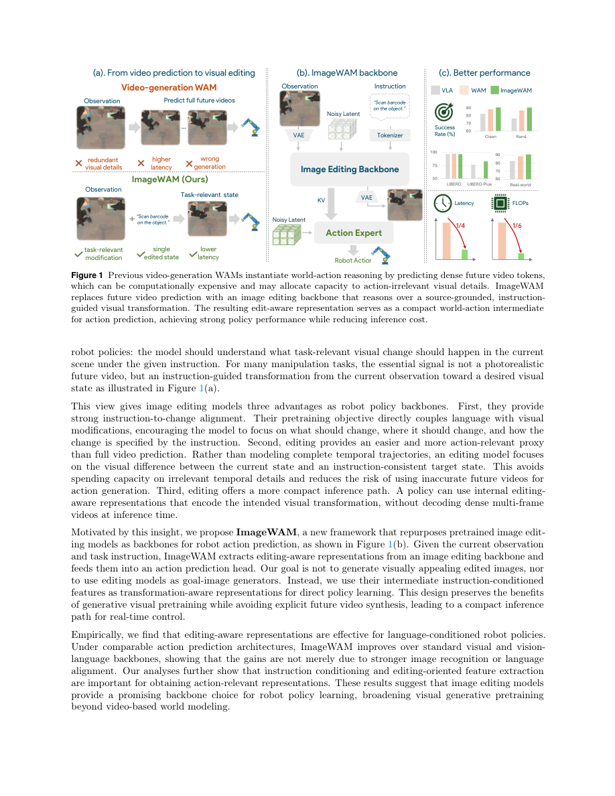

#1
★ 8/10
ImageWAM: Do World Action Models Really Need Video Generation, or Just Image Editing?
ImageWAM：世界行动模型真的需要视频生成，还是只需图像编辑？

图 Figure · Page 2 of paper
🎯 用图像编辑替代视频生成，让机器人决策更快更准
Robot action models work better with image editing than costly video generation.
🗣️ 一句话比喻 · Plain-English Analogy就像一个厨师不需要脑补整个烹饪过程的慢动作回放，只需要在脑海中快速"闪现"一张成品菜的图片，就能知道下一步该怎么动刀——ImageWAM就是让机器人用这种"看一眼结果图"的方式代替"脑补整段视频"，又快又准。Think of it like a chef who doesn't need to mentally replay the entire cooking show to know what to do next — they just flash-imagine a picture of the finished dish, and that's enough. ImageWAM teaches robots to do exactly that: picture the "after" snapshot instead of playing a full mental movie, making decisions just as good but far faster.
| 维度 | 中文 | English |
|---|---|---|
| ❓ 待解决 的问题 |
教机器人做事，通常需要让它"想象"未来会发生什么——就像在脑子里先放一段小视频，再决定怎么动。但生成完整视频非常慢、非常耗算力，而且机器人还会把精力浪费在预测"阴影怎么移动"这种无关紧要的细节上，而不是专注于任务本身。现有的AI机器人控制模型因此又慢又重，还可能被自己不完美的视频预测误导。 | Teaching robots to act in the world often requires them to "imagine" what will happen next — like watching a little movie of the future before deciding what to do. But generating full videos is extremely slow and expensive, and the robot wastes effort predicting irrelevant details (like how a shadow moves) instead of focusing on what actually matters for the task. Existing AI robot-control models struggle with this: they're slow, computationally heavy, and can be misled by their own imperfect video predictions. |
| 💡 解决 的亮点 |
• 不生成完整的未来视频，只预测一张"操作前后"的对比图——就像拍一张"完成后应该是什么样"的照片，而不是录整个过程的视频。 • 复用了强大的预训练图像编辑AI，这类模型天生擅长理解"哪里发生了什么变化"，天然聚焦于与动作相关的视觉差异。 • 推理时甚至不需要真正画出目标图像，只借用图像编辑器的"内部思考过程"（KV缓存）来决策动作，速度大幅提升。 | • Instead of generating a full video of the future, ImageWAM only predicts a single "before and after" image — like snapping one photo of what the world should look like after the action, rather than filming the whole process. • It reuses powerful pretrained image-editing AI, which is already great at understanding "what changed and where," focusing only on action-relevant visual differences. • At runtime, it never even draws the target image — it just uses the hidden "thinking process" of the image editor as context for deciding actions, making it dramatically faster. |
| 🧪 实验 内容 |
研究者在模拟环境（包括LIBERO基准测试套件的多个任务集）和真实机器人操作任务上测试了ImageWAM。对比对象包括标准的视觉-语言-动作（VLA）基线模型和竞争力强的基于视频的世界行动模型。评估指标涵盖任务成功率、计算量（FLOPs）和推理延迟，同时衡量能力与效率。 | The researchers tested ImageWAM in both simulated environments (including the LIBERO benchmark suite with multiple task sets) and real-world robot manipulation tasks. They compared it against standard Vision-Language-Action (VLA) baselines and competitive video-based World Action Models. Evaluations measured task success rates, computational cost (FLOPs), and inference latency to assess both capability and efficiency. |
| 📊 实验 结果 |
ImageWAM在模拟器和真实世界实验中的任务成功率超越了标准VLA基线，并与竞争力强的视频WAM持平——而且不需要额外的策略预训练。最亮眼的是：计算量仅为视频WAM的1/6，推理延迟降至1/4。在LIBERO基准测试上，成功率达到有竞争力或更优的水平，同时效率大幅领先。注意力分析也证实，编辑缓存确实聚焦在与任务相关的变化区域，而非无关的背景细节。 | ImageWAM outperforms standard VLA baselines and matches competitive video-based WAMs on task success rates across simulator and real-world experiments — all without additional policy pretraining. Most strikingly, it reduces computational cost to just 1/6th the FLOPs of video-based WAMs and cuts inference latency to 1/4. On the LIBERO benchmark, it achieves competitive or superior success rates while being dramatically more efficient. Attention analysis confirms the editing caches focus specifically on task-relevant change regions rather than irrelevant background details. |
| 🏁 结论 | 本文证明了机器人行动模型根本不需要生成完整的未来视频——只需一步图像编辑过程的内部表示，就足以媲美甚至超越视频方法，同时速度快4-6倍、成本大幅降低。图像编辑由此被确立为机器人世界行动建模的强大且实用的替代方案。 | This paper proves that robot action models do NOT need to generate full videos of the future — a single image-editing step, used purely for its internal representations, is enough to match or beat video-based approaches while being 4–6× faster and cheaper. It establishes image editing as a powerful and practical alternative for world-action modeling in robotics. |
| 🔗 论文 链接 |
arXiv: 2606.19531v1 · 📥 PDF | |
⚙️ Method · 方法详解
ImageWAM拿来一个预训练的图像编辑模型——就是那种能根据指令把"凌乱桌面"变成"整洁桌面"的AI——然后把它改造成机器人控制器。训练时，编辑模型学习预测机器人执行动作后场景应该是什么样。但到了实际使用时，系统很聪明：它不真正画出那张未来图像，而是截取编辑模型在"思考变化过程"中产生的内部"笔记"（称为KV缓存）。这些笔记简洁地总结了"什么地方需要发生什么变化"。然后一个轻量级的"动作专家"模块读取这些笔记，输出机器人的运动指令。这样既节省了大量计算，又保留了丰富的、聚焦于任务的世界知识。
ImageWAM takes a pretrained image-editing model — the kind that can turn a photo of a messy desk into a tidy one given an instruction — and repurposes it for robot control. During training, the editing model learns to predict what the scene should look like after a robot action. But at test time, the system is clever: instead of actually rendering that future image, it captures the internal "notes" (called KV caches) the editing model made while thinking about the transformation. These notes compactly summarize what needs to change and where. A separate lightweight "action expert" then reads those notes and outputs the robot's movement commands. This keeps computation minimal while still giving the robot rich, task-focused world knowledge.
🌟 Why It Matters · 为什么重要
让机器人AI运行得更快、更便宜，对于将机器人带入家庭、工厂和医院至关重要——因为这些场景对实时响应要求高，算力资源有限。这项工作提供了一条更聪明的捷径：不让机器人做"全高清视频"式的白日梦，只需让它想象关键的"前后对比"时刻，大幅降低成本的同时不牺牲性能。
Making robot AI faster and cheaper to run is a huge deal for bringing robots into homes, factories, and hospitals — where real-time response matters and compute budgets are limited. This work shows a smarter shortcut: instead of making robots daydream in full HD video, just ask them to picture the key "before and after" moment, slashing costs without sacrificing performance.